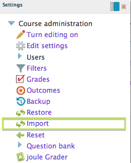
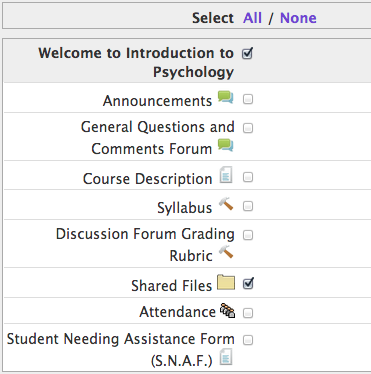
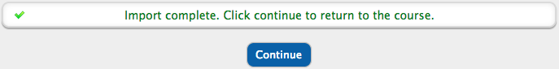

Course: Import items from a previous class to a new class
Populating
a new class shell with files and documents can be accomplished a few different
ways. Files can be imported from the class shell of the previous term, or from
the My Private Files folder (My Private Files is a personal storage repository
available to you within the eLearning system).
This tutorial will explain how to import files from the previous term's class.
At the bottom of this page, there is a link to a video tutorial from the Faculty
Orientation to Pacific College eLearning course.
1. Open the course you want to import documents to.
The Course Home Page will display.
First, you will need to prepare your course shell so that when items are
imported, you will be able to view them.
A. Choose Settings > Edit Settings. The Course Administration Edit Settings
page will open.
B. Next to "Number of Topics" choose the number of weeks/Units that
your class includes.
C. Scroll to the bottom and click Save Changes. The Course Home Page will
display again.
You will now see that several (empty) units have been added to your course home
page. The next few steps will import content from your previous class and
populate into these units.

2. Select Settings > Import
The settings menu will either be in the upper left side bar
(recommended), or along the column of feature blocks on the right side of the
Course Home Page, probably towards the bottom.
For instructions on how to move the Settings block to the left side bar and
reduce the need for scrolling, click the "Organizing The Workspace"
tutorial below in the References section.
3. Search for the course to import files from.
Enter the course code into the search field (ex: PSY101). Select the appropriate course from search results. You will need to know the full course code, such as day of the week and time of day the course was held. Click the Continue button after you select your course. Next, the Initial Settings page will display.
4. Initial Settings page - Just click "Next"
The initial settings can be left at their default settings. No changes need to be made. Click Next. The Schema Settings page will display next.

5. Schema Settings page - Select what you want to import.
This page displays all of the content that is available to
be imported. You will choose all of the items you want to import on this page.
a. If you want to import your entire previous term's class, go to step
"e" below. The video at the bottom of this page walks you through the
process of importing the entire class.
*** NOTE THAT IF YOU WANT TO IMPORT YOUR GRADEBOOK SETUP, YOU MUST IMPORT THE
ENTIRE CLASS. ***
If you only want to import selected items, click on the word “None” at the top
of the list. This will uncheck all items.
b. Locate the folder or
documents that you wish to import. Note: If you want to import the Shared Files
folder, you will select the folder, not individual files within the folder. All
folder contents will be imported and copied over.
c. Check the box on the Section Header that contains your documents to activate
that section and its contents (see image to the right “Welcome to Introduction
to Psychology" is the header).
d. Next, check the
boxes next to the items you wish to import. You can select as many items as you
wish and import them all at the same time. NOTE: Do not import the Syllabus
from a previous class, as it must be approved and updated for each term. If you
are not able to check the box to select individual items, then you missed step
5-c above, selecting the section header.
e. Scroll to the bottom of the page and click Next. The Confirmation and Review
page will display next
6. Confirmation and Review page - Confirm your selections
The same list of all course items will display, however, a
green check will be next to the items scheduled to import and a red x will be
next to items that will not be imported. Scroll to the bottom of the page and
click Perform Import.
Depending on the amount of content being imported, this may take several
seconds to complete, please be patient.

7. Import is Complete
A message in green text will display indicating the import
is complete. Click Continue. The Course Home Page will display and will now
include the items that were imported.
On rare occasions, a blank white screen may display rather than the
"Import Complete" message. This will probably log you out of the
course. Simply log back into the Course Home Page and in most cases, the import
was completed properly and your items will be displayed. If you do not see any
of the items you wanted to import. Try the process again. If the issue
continues, submit a support ticket to the IT Help Desk.
If you imported the entire previous terms class, go to the gradebook to make
sure it is set up correctly.
If you only imported selected materials, inspect the new shell to make sure
everything is present. Be sure to open any folders or documents that were just
imported to verify that all of the contents are present and they are working
properly.
With editing turned on, you may click and hold the four-pointed arrow, then
drag the item to a new location in the list, if desired.
*** YOU WILL ALSO WANT TO DELETE DUPLICATE ITEMS SUCH AS YOUR PREVIOUS TERMS
ATTENDANCE SETUP AND ANNOUNCEMENTS. ***
*** BE SURE TO INSERT THE REAL NAME OF THE COURSE IN THE AREA WHERE IT SAYS:
Welcome to [Enter Course Name Here]. TO DO SO, JUST CLICK THE "TURN
EDITING ON" BUTTON ON THE UPPER RIGHT OF THE PAGE AND THEN CLICK THE GEAR
ICON BELOW THE WELCOME MESSAGE. ***
8. Orphaned Activities
If you notice "Orphaned Activities" on the Course Home Page after you do your import, then the import brought over content from a Unit that does not currently exist in the new course shell. You simply need to add more units to make this content visible. Open Settings > Edit Settings, and increase the "Number of Topics" in the Format section. If you have one Orphaned Activity, then you need to increase the number of topics by one.
If you experience any problems, or would like to make suggestions on enhancements to this tutorial so that it is more comprehensive, then please click on the Pacific College Support link to submit a request for support.
References
A printable PDF procedure for importing files
Video Tutorial: How to import selected content from a previous class (not including the gradebook)
Video Tutorial: How to import all the content from a previous class (including the gradebook)